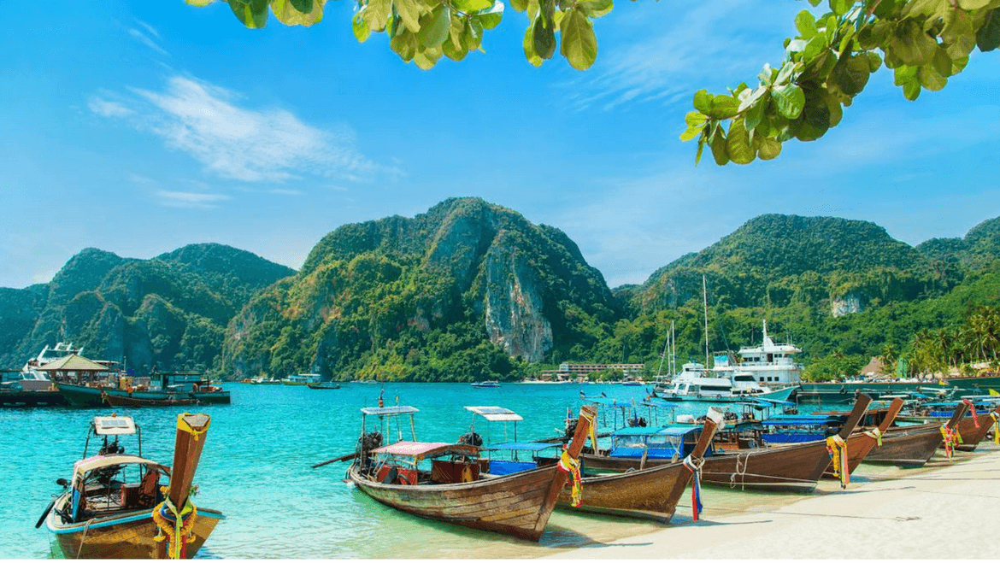

Turquoise waters, coral reefs, and untouched tropical beaches.

The Andaman and Nicobar Islands are a group of islands at the junction of the Bay of Bengal and the Andaman Sea. The territory consists of 572 islands, of which only 37 are inhabited. Port Blair is the capital. The islands are known for their pristine beaches, crystal-clear waters, and rich marine biodiversity. The Cellular Jail in Port Blair is a historic site from British colonial times. The islands offer some of the best scuba diving and snorkelling in Asia, especially at Havelock Island and Neil Island.